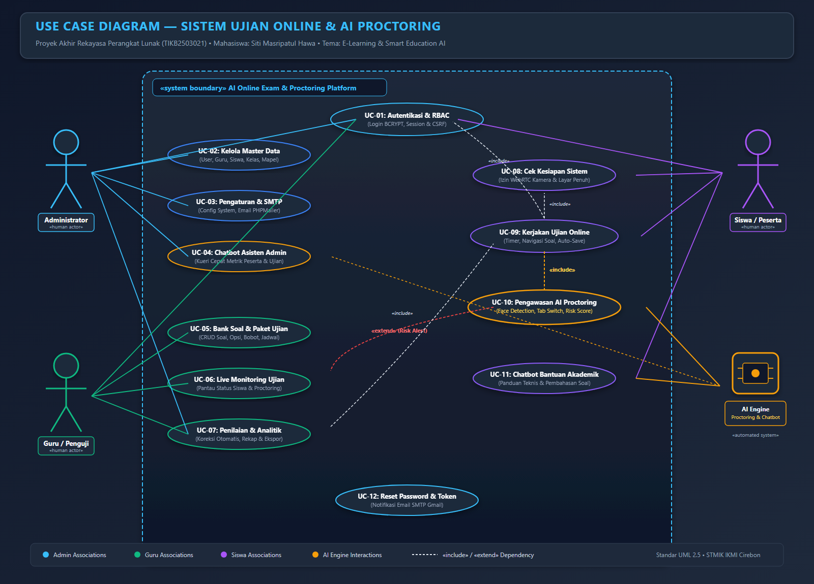
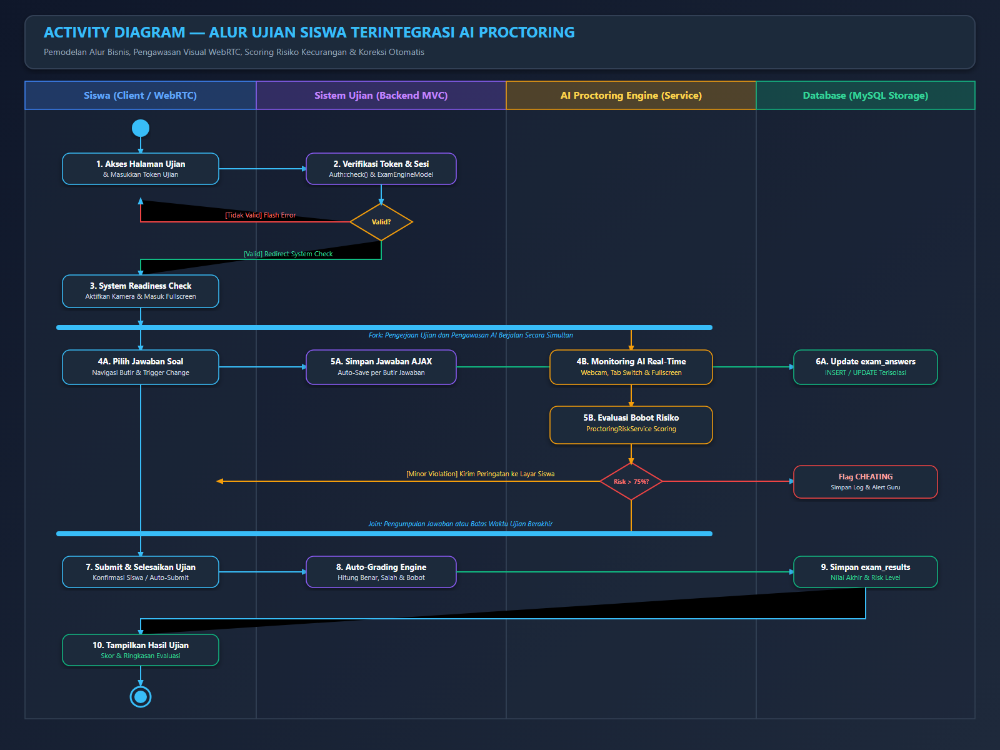
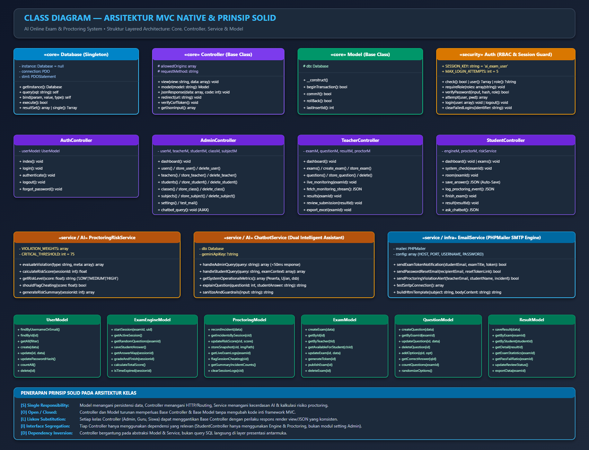
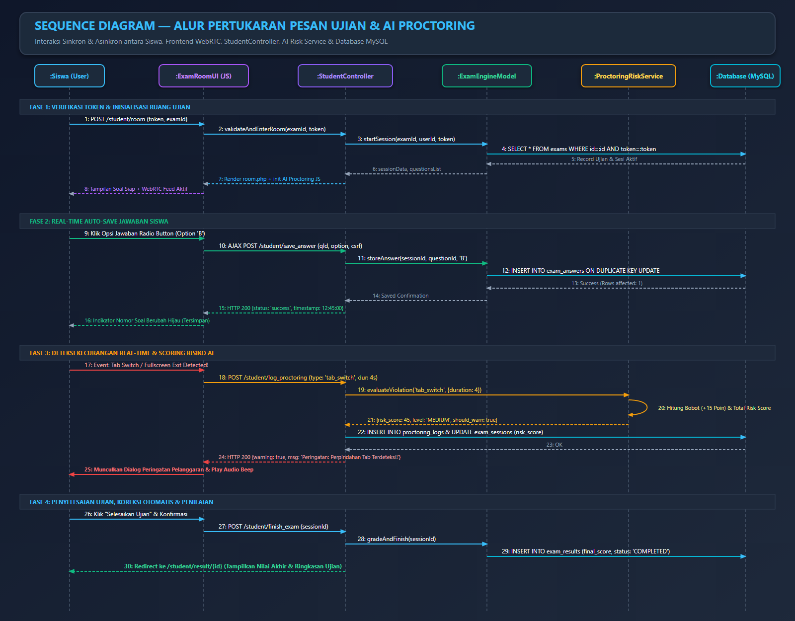

Mata Kuliah: Rekayasa Perangkat Lunak (TIKB2503021) • Pengembang: Siti Masripatul Hawa • STMIK IKMI Cirebon
Memodelkan 4 Aktor (Administrator, Guru, Siswa, AI Engine) dan 12 Use Case esensial.

Memodelkan alur eksekusi paralel (Fork-Join), auto-save AJAX, pengawasan WebRTC & scoring risiko kecurangan.

Struktur relasi Core (Database, Controller, Model), Controllers, Services (AI & SMTP) serta Data Models.

Rangkaian 30 pesan sinkron & asinkron antar komponen: Client UI, Controller, Risk Service & MySQL DB.
